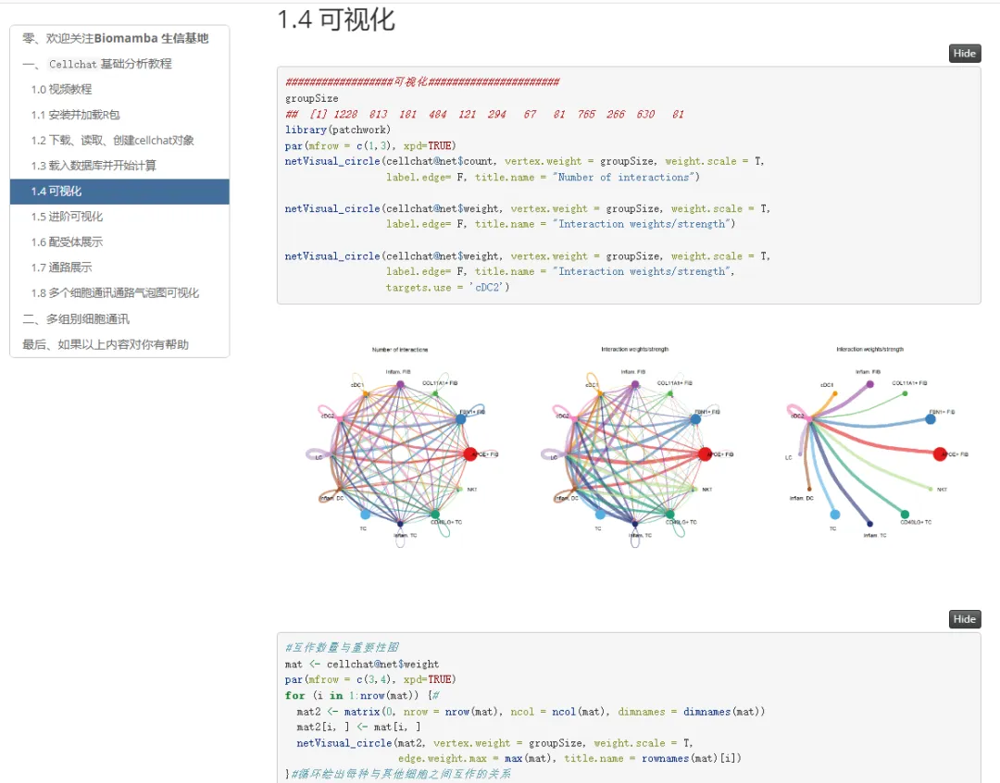

《细胞通讯》CellChat学习手册
原文：https://mp.weixin.qq.com/s?__biz=MzAwMzIzOTk5OQ==&mid=2247501735&idx=2&sn=35fc792961507f4ae1cbae3a2882fba6&chksm=9b3cbef7ac4b37e1417d4108c8bd378c68c3907431ddfc52ad37c916e85649bb450d761a8e19#rd 合集：单细胞教程全收录

前言
 细胞通讯的课程我们已经做了好几集了，目前B站的播放量也快两万了，最后整理一下学习手册(当然更推荐选择参考:https://github.com/sqjin/CellChat)，要开始筹划其他细胞通讯软件的分析教程了。学习手册为Rmarkdown编译的html文件，可以通过点击导航栏快速定位到需要查看的位置：
细胞通讯的课程我们已经做了好几集了，目前B站的播放量也快两万了，最后整理一下学习手册(当然更推荐选择参考:https://github.com/sqjin/CellChat)，要开始筹划其他细胞通讯软件的分析教程了。学习手册为Rmarkdown编译的html文件，可以通过点击导航栏快速定位到需要查看的位置：

主要分析图表展示：

视频教程
B站同步播出：https://www.bilibili.com/video/BV1Ab4y1W7qx?
第一讲|细胞通讯绪论
第二讲|CellChat基础分析教程：时长超了，直接看B站：https://www.bilibili.com/video/BV1Ab4y1W7qx?p=3
第三讲|CellChat多组别分析：
CellChat学习手册测试文件及代码下载** **